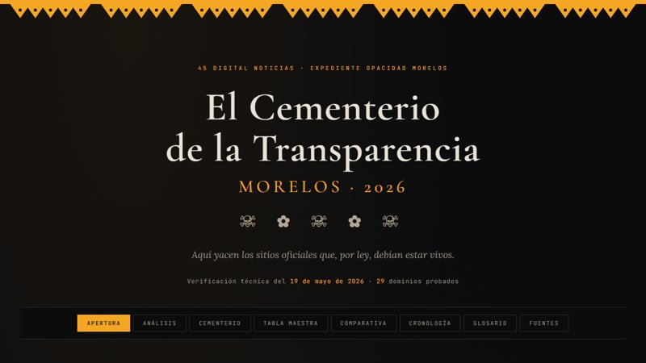

Expediente Brotes 2026
Hantavirus y ébola como corredor del Mundial 2026: el mapa, los actores y la doctrina del shock. Tablero interactivo.
Abrir el tablero
El Cementerio de la Transparencia
El desmantelamiento del IMIPE y la auditoría de los sitios oficiales caídos del gobierno de Morelos. Tablero interactivo.
Abrir el tablero
Morelos: seguridad municipal
Hub de datos de violencia y desapariciones por municipio (SESNSP / RNPDNO): rankings, series y fichas de Cuautla, Cuernavaca, Ayala, Jiutepec y más. Tablero interactivo.
Abrir el tablero